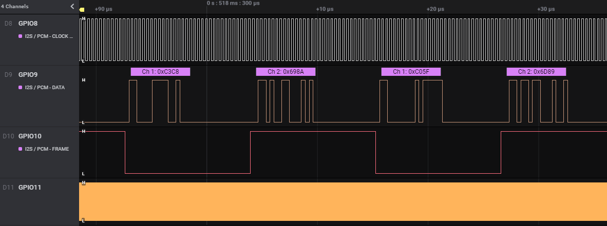

I2S Example
Overview
The purpose of this example is to show how to use the I2S driver (Master, TX_ONLY).
This example output 2 sine waves of different frequencies in right and left channels.
The PmodI2S2 module is used to demonstrate the use of the I2S master driver.

The output is a sine wave of 220.5Hz on the left channel and 441Hz on the right channel.
I2S configuration:
Master TX only
Protocol I2S, phase delay 1
Sampling rate 44.1kHz (Fsync freq)
Sclk freq 2.8224MHz (64 * 44.1kHz), fsync length 32, phase length 32
Mclk freq 22.5792MHz (512 * 44.1kHz)
Data format 16 bits
1 tx channel on phase0 and phase1
GPIOs used:
I2S Sclk on GPIO8
I2S Sdata on GPIO9
I2S Fsync on GPIO10
I2S Mclk on GPIO11
Note
This example uses GPIOs 8-11 so JTAG can’t be used.
Build
The build target of this example is: i2s_example
cd <sdk>\build
cmake --build . --target i2s_example
Run
To program and run the example:
cd <sdk>\tools\blengine
python blengine_cli.py --port COMYY run emsystem_prog ..\..\build\projects\i2s_example\i2s_example.ihex --progress
With YY = the COM port number of your DVK.
You should see the following signals on GPIO8-11:
{kind=link}
If you connect the PmodI2S2 to the DVK and a speaker to the PmodI2S2 jack plug, you should be able to hear the sine waves.